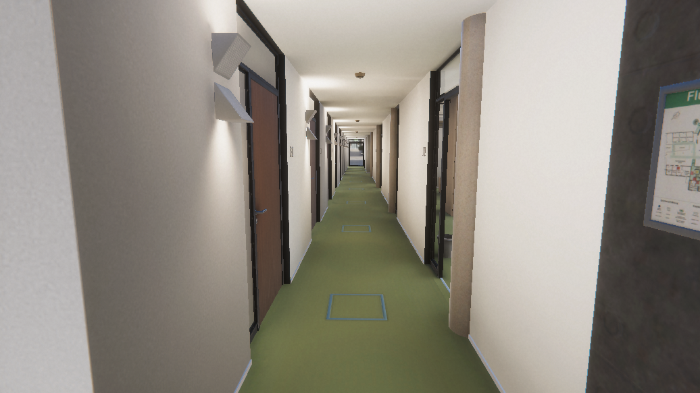
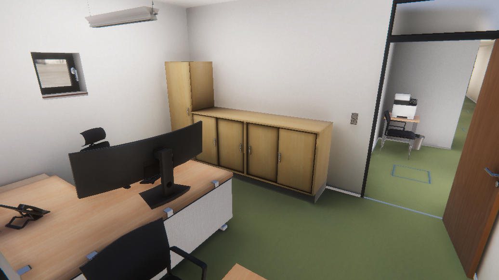
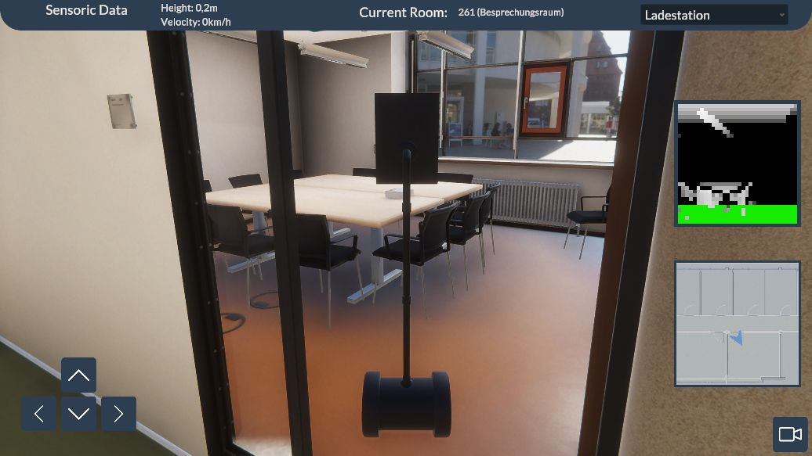
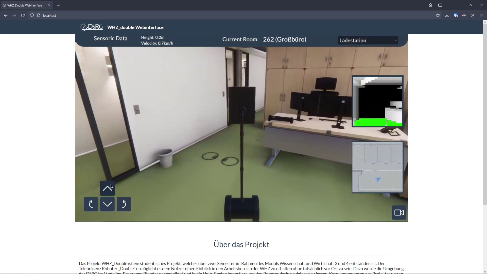

1 / 5

The main office
2 / 5

Corridor
3 / 5

A single office
4 / 5

The robot in the gameview
5 / 5

A digital replica of some offices of the West Saxon University of Applied Sciences Zwickau. This was a group project with a total of 7 students over a period of 3 semesters.
The project was a group work as part of a module series of our studies. A total of 7 students digitally recreated the offices of the West Saxon University of Applied Sciences Zwickau in 3 semesters for an external stakeholder.
First we measured the rooms and then reconstructed them with the help of blender and CAD. We have also modeled individual pieces of furniture and textured them. The models were imported into the Unity Engine, in which we also baked the lighting.
The double robot was also simulated and an interface was created to control it like the real one, so that the digital robot can be connected to a machine learning program.
At last a scientific paper on this project was written, which was submitted and accepted at NWK23.
A presentation about the paper will be given at the conference on 01.06.2023.
I had many different tasks, but some of them were always worked on as a group, like project management or preparing and holding presentations. Here are some of my more important tasks in this project.
My first task was creating the UI for our prototype, which was also used in the final product.
I have used the measured references and pictures and modelled some of the furniture like the chairs, doors, chests and smaller stuff. Every model also has a highpoly version to generate a normal map. These models were also unwrapped by me and later textured by someone else.
Together with another member of the group we also did the lighting for the environment. We used Unitys lightbaking to generate lightmaps, which are more performant, than realtime lighting.
Lastly I was also responsible for some parts of our scientific paper. I was heavily involved in writing and correcting it and I will also be one of the two people of our group attending the conferenze at which our paper will be published.
Since this was a really big project I learned a lot of things
First, of course, working in a group for a stakeholder. Also agile project management through repeated meetings with mentors and stakeholders. I also learned how to present myself and my results well and how to deal with criticism correctly.
Using different programms I never or rarely used before also helped me improving with these. Blender, Unity or Overleaf were all programms in which i have improved. Some things, like light baking, I did for the first time and learned how to work out an efficient workflow for it.
Writing a scientific paper was also something I learned while writing ours.
This project was a collaboration between the University of Applied Sciences Mittweida and the Data Science Research Group of the University of Applied Sciences Zwickau.